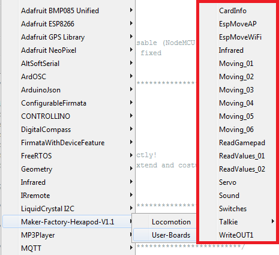

Demo programs¶
To use the user boards easily and comfortably, use the Maker-Factory Hexapod library. This library was already installed at the beginning of this manual. The provided examples show the use of the user boards and the functionality of the Arduino Hexapod library. When using user boards that are not Arduino compatible (like SBC), look at the file "Hexapod_Lib.h". This file shows how the communication between the user board and the locomotion controller works. This will serve you as an example for developing your own function library. To do this, unpack the ZIP file "\LibraryDemos\Maker-Factory-Hexapod-Vx.1.zip" from the download bundle and look at the source code of the library in an editor such as Notepad or a development environment of your choice.
Warning
The supplied examples are designed for "Arduino UNO" and "NodeMCU" boards programmed with the Arduino IDE.

Figure 78
The Arduino examples show how to use the library. These can be found in the Arduino IDE under "Examples\Maker-Factory-Hexapod-Vx.x...". Take your time to look at all the examples and test them on your Hexapod. Once you have understood the examples, you can start and create your own programmes with them. Take a closer look at the "Hexapod_Lib.h". With some experience you can easily extend it with your own functions.
Short description of the provided examples for Locomotion TODO¶
In the folder "Locomotion" you find the examples for the Locomotion controller (Arduino MEGA2560).
- LEDs Small test programm that alternately flashes the two LEDs (Users and Live).
- Motion-Firmware Firmware of the locomotion controller.
- ServoCenter This program moves the servos to the middle position. As needed for mechanical assembly of the Hexapod robot.
Brief description of the supplied examples for user boards¶
In the folder "User-Boards" you will find the examples for Arduino UNO and NodeMCU or compatible boards.
Warning
Before use, change the Arduino IDE to the correct Arduino board! Also, read the information in the comments to the respective examples!
Info
The "Hexapod_Lib.h" contains all functions that are sent and received from the UserBoard to the Locomotion-Controller. For the advanced developer it is worthwhile to have a look inside or to extend these with proper functions. The functions contain a detailed comment which parameters can be passed. The programme code for receiving the data, sending the data to the UserBoard and evaluating the gamepad can be found in the locomotion firmware in the file "Data_Input.h".
The "Hexapod_Lib.h" can also be downloaded from the product's website.
"CardInfo"¶
Info
This example is intended only for Arduino UNO or compatible boards!
With this example you can check the function of the MicroSD card reader. Insert a MicroSD memory card with arbitrary content into the card slot and start the example. The terminal displays the contents of the memory card (file name). All original Arduino SD card examples work. You only have to change the pin for "CS" (Chipselect) as in this example. The terminal baud rate is 19200 baud.
"EspMoveAP"¶
Info
This example is intended for NodeMCU boards only
The example shows control via an HTTP server using a direct WiFi connection to the NodeMCU board. The programme sets up an access point with which you can connect to a smartphone, for example. The assigned IP address is displayed in the terminal. Type it into your browser. Then the browser loads the web interface to control the robot. You can then control the robot via WiFi by tapping or clicking the buttons. The example can easily be extended by you into other functionalities. The terminal baud rate is 115200 baud.
"EspMoveWiFi"¶
Info
This example is intended for NodeMCU boards only
The example shows the control via a web browser using a WiFi connection to the NodeMCU board. The programme establishes a connection to your router and the robot is then accessible within your network. The assigned IP address is displayed in the terminal. Type it into your browser. Then the browser loads the web interface to control the robot. You can then control the robot via WiFi by tapping or clicking the buttons. The example can easily be extended by you into other functionalities. The terminal baud rate is 115200 baud.
"Infrared"¶
Info
This example is intended only for Arduino UNO or compatible boards!
The example reads an RC5 infrared code and outputs the values at the terminal. Plug the Jumper J8 in the direction of the label "IR-U". The universal remote control can serve as an IR transmitter set to RC5 (many Philips devices work with RC5), which is available for TV and audio equipment in stores. The terminal baud rate is 19200 baud.
"Moving_01"¶
This example shows how data is sent to the locomotion controller without the Hexapod library. This example is well suited as a basis for using SBC. However, experience in programming is necessary! Have a closer look at the function SendData(). Here you can see how data is sent from the user board to the locomotion controller. The programme does not make an acknowledgement evaluation, but sends the data only to the locomotion controller without evaluating an answer from the locomotion controller.
"Moving_02"¶
This example is ideal for getting started with the programming of user boards and shows the basic functions to control the Hexapod with the help of the library.
"Moving_03"¶
This example shows how to use the ROBOT_MOVE() function.
"Moving_04"¶
This example shows how to use the ROBOT_ROTATE_MODE() and ROBOT_TRANSLATE_MODE() functions.
"Moving_05"¶
This example shows how to use the ROBOT_SINGLE_LEG() function.
"Moving_06"¶
This example shows how to interrupt a user programme using the gamepad. In this example, use the terminal to receive the messages from the robot. Set the robot to an elevation so that the legs move in the air without touching the ground. This allows you to observe the output when controlling the robot on the terminal. The terminal baud rate is 115200 baud.
"ReadGamepad"¶
The example shows how you can read the control data of the gamepad from the locomotion controller. If you plug in the jumper "J7", the locomotion controller no longer reacts to the gamepad. It is then possible to use the data only on the user board and to realise your own controls. The terminal baud rate is 115200 baud
"ReadValues_01"¶
The example shows how you can send and read data between locomotion controller and user board without a library. This example is well suited as a basis for using SBC. However, experience in programming is necessary! The terminal baud rate is 115200 baud.
"ReadValues_02"¶
This example shows how to read data from the locomotion controller using the library. The terminal baud rate is 115200 baud.
"Servo"¶
The example shows the use of additional servos which are controlled via the user board. The connectors SU1 to SU3 are used for this purpose. It is also possible to use the connectors SU1 to SU3 for other components such as sensors, buttons, switches, etc. The terminal baud rate is 115200 baud.
"Sound"¶
The example shows a simple sound output via the loudspeaker.
"Switches"¶
The example shows how the user buttons T1 and T2 are queried.
"Talkie"¶
Talkie shows how speech output can be realised with the help of the Talkie library. Talkie is an implementation of the Texas Instruments ICs speech synthesiser on an Arduino board. This IC was very often used in the early 80s. This speech output was often found in expensive clocks, game computers, learning computers and many other devices. The unmistakable sound from the 80's is also available on the Hexapod Robot Board. The examples contain over 1000 prefabricated phrases that can be assembled to sentences. If the voice output is too quiet for you, you can increase the volume at the trimmer "Vol." on the Hexapod Robot Board. In addition, you can build a small "speaker box" for the speaker, this increases the volume significantly! A simple small box can do wonders here.
"WriteOUT1"¶
This example shows how to read and write the IN1 and OUT1 inputs/outputs of the locomotion controller. This gives you an additional input and output to the user board. The pins are directly connected to the locomotion controller and can supply a maximum of 20 mA current. The maximum input voltage for the input is 5 V/DC.